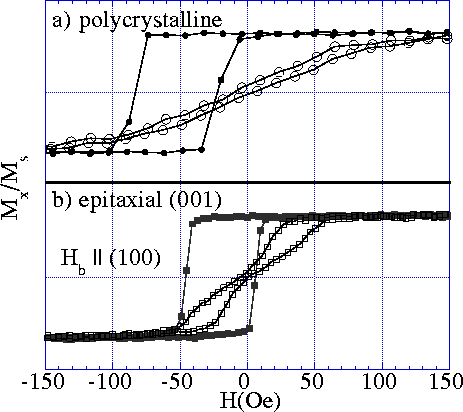
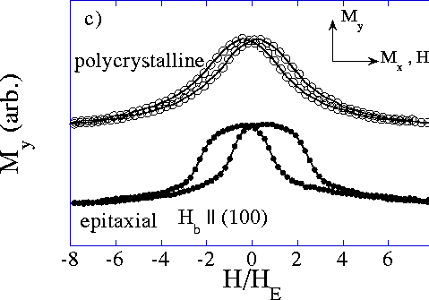

Figure 3: Magnetization data for two NiO 500Å/NiFe 100Å\ bilayer films deposited simultaneously.

In a) the easy-axis (H parallel to H b, the bias field during growth) and hard-axis (H perpendicular to H b) magnetization curves of the polycrystalline bilayer couple is shown. The easy-axis loop is shifted by H E = 52 Oe due to interfacial exchange anisotropy with the NiO. b) shows the same measurement as in a) for an epitaxial (001) bilayer deposited on MgO. The bias field, H b, applied during deposition was aligned parallel to an in-plane MgO (100) axis. The easy-axis loop is shifted by H E = 20 Oe. Discontinuities in the hard-axis loop reveal the present of a cubic induced anisotropy term that produces a local energy minimum parallel to the applied field and perpendicular to H b.

In c) the transverse hard axis magnetization, M y,
for the polycrystalline (open circles) and epitaxial (filled
circles) are compared. The smooth curve of the
polycrystalline M y loop shows the magnetization
vector rotates continuously as the applied field varies. The
plateau in the epitaxial M y loop confirms that
the NiFe moment turns discontinuously from a local energy
minimum parallel to the applied field to the deep
unidirectional minimum perpendicular to it.